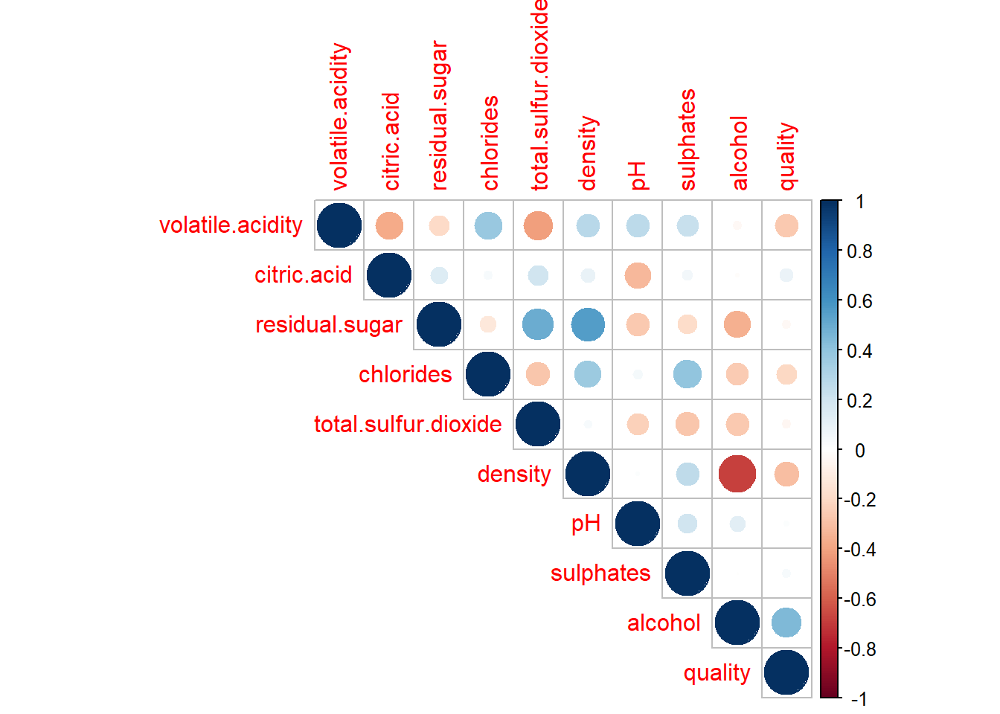
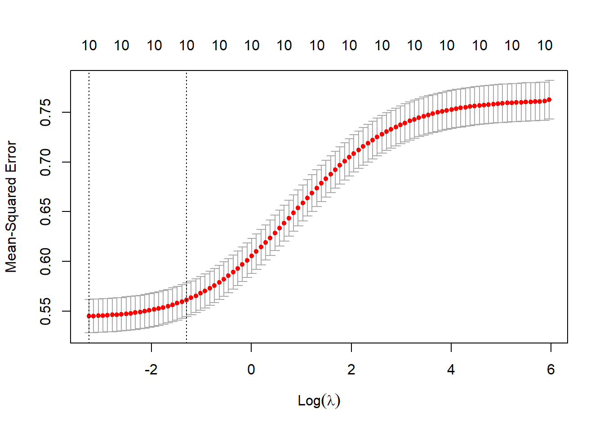
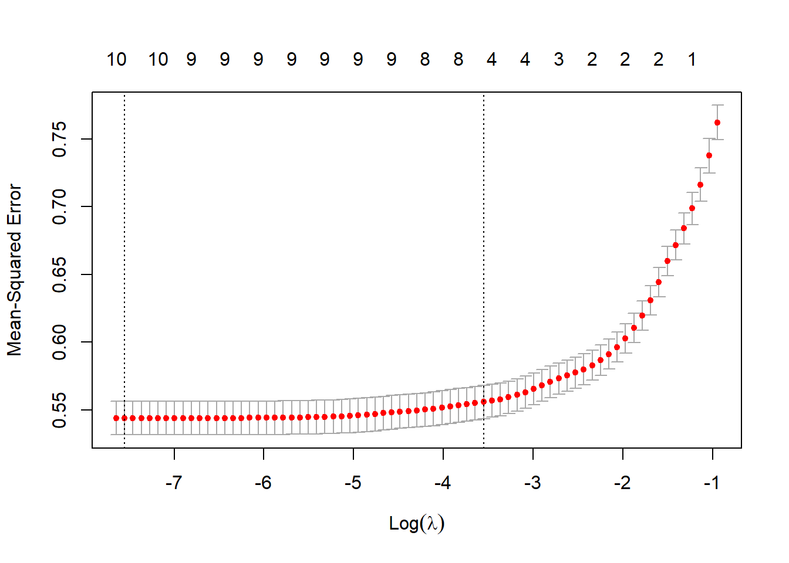

Please read the instructions carefully before submitting your assignment.
This assignment requires you to only upload a PDF file on Canvas
Don’t collapse any code cells before submitting.
Remember to make sure all your code output is rendered properly before uploading your submission.
⚠️ Please add your name to the author information in the frontmatter before submitting your assignment ⚠️
For this assignment, we will be using the Wine Quality dataset from the UCI Machine Learning Repository. The dataset consists of red and white vinho verde wine samples, from the north of Portugal. The goal is to model wine quality based on physicochemical tests
We will be using the following libraries:
library(readr)
Warning: package 'readr' was built under R version 4.0.5
library(tidyr)
Warning: package 'tidyr' was built under R version 4.0.5
library(dplyr)
Warning: package 'dplyr' was built under R version 4.0.5
Attaching package: 'dplyr'
The following objects are masked from 'package:stats':
filter, lag
The following objects are masked from 'package:base':
intersect, setdiff, setequal, union
library(purrr)library(glmnet)
Warning: package 'glmnet' was built under R version 4.0.5
Loading required package: Matrix
Warning: package 'Matrix' was built under R version 4.0.5
Attaching package: 'Matrix'
The following objects are masked from 'package:tidyr':
expand, pack, unpack
Loaded glmnet 4.1-4
#library(car)
Question 1
50 points
Regression with categorical covariate and \(t\)-Test
1.1 (5 points)
Read the wine quality datasets from the specified URLs and store them in data frames df1 and df2.
Perform the following tasks to prepare the data frame df for analysis:
Combine the two data frames into a single data frame df, adding a new column called type to indicate whether each row corresponds to white or red wine.
Rename the columns of df to replace spaces with underscores
Remove the columns fixed_acidity and free_sulfur_dioxide
Equivalently, R has a function called t.test() which enables you to perform a two-sample \(t\)-Test without having to compute the pooled variance and difference in means.
Perform a two-sample t-test to compare the quality of white and red wines using the t.test() function with the setting var.equal=TRUE. Store the t-statistic in t2.
Fit a linear regression model to predict quality from type using the lm() function, and extract the \(t\)-statistic for the type coefficient from the model summary. Store this \(t\)-statistic in t3.
fit <-lm(quality ~ type, data = df)t3 <-summary(fit)$coefficients[2, "t value"]t3
[1] -9.68565
1.6 (5 points)
Print a vector containing the values of t1, t2, and t3. What can you conclude from this? Why?
c(t1, t2, t3) # Insert your code here
t
-9.68565 9.68565 -9.68565
—
Question 2
25 points
Collinearity
2.1 (5 points)
Fit a linear regression model with all predictors against the response variable quality. Use the broom::tidy() function to print a summary of the fitted model. What can we conclude from the model summary?
fit_all <-lm(quality ~ ., data = df)broom::tidy(fit_all)
Fit two simple linear regression models using lm(): one with only citric_acid as the predictor, and another with only total_sulfur_dioxide as the predictor. In both models, use quality as the response variable. How does your model summary compare to the summary from the previous question?
model_citric <-lm(quality ~ citric.acid, data = df)summary(model_citric)
Call:
lm(formula = quality ~ citric.acid, data = df)
Residuals:
Min 1Q Median 3Q Max
-2.9938 -0.7831 0.1552 0.2426 3.1963
Coefficients:
Estimate Std. Error t value Pr(>|t|)
(Intercept) 5.65461 0.02602 217.343 <2e-16 ***
citric.acid 0.51398 0.07429 6.918 5e-12 ***
---
Signif. codes: 0 '***' 0.001 '**' 0.01 '*' 0.05 '.' 0.1 ' ' 1
Residual standard error: 0.8701 on 6495 degrees of freedom
Multiple R-squared: 0.007316, Adjusted R-squared: 0.007163
F-statistic: 47.87 on 1 and 6495 DF, p-value: 5.002e-12
model_sulfur <-lm(quality ~ total.sulfur.dioxide, data = df)summary(model_sulfur)
Call:
lm(formula = quality ~ total.sulfur.dioxide, data = df)
Residuals:
Min 1Q Median 3Q Max
-2.8866 -0.7971 0.1658 0.2227 3.1965
Coefficients:
Estimate Std. Error t value Pr(>|t|)
(Intercept) 5.8923848 0.0246717 238.831 < 2e-16 ***
total.sulfur.dioxide -0.0006394 0.0001915 -3.338 0.000848 ***
---
Signif. codes: 0 '***' 0.001 '**' 0.01 '*' 0.05 '.' 0.1 ' ' 1
Residual standard error: 0.8726 on 6495 degrees of freedom
Multiple R-squared: 0.001713, Adjusted R-squared: 0.001559
F-statistic: 11.14 on 1 and 6495 DF, p-value: 0.000848
2.3 (5 points)
Visualize the correlation matrix of all numeric columns in df using corrplot()
library(corrplot)
corrplot 0.92 loaded
correlatoin_matrix <- df %>%keep(is.numeric) %>%cor()corrplot(correlatoin_matrix, type ="upper", method ="circle")

2.4 (5 points)
Compute the variance inflation factor (VIF) for each predictor in the full model using vif() function. What can we conclude from this?
#vif_values <- vif(df) # Insert your code here
—
Question 3
40 points
Variable selection
3.1 (5 points)
Run a backward stepwise regression using a full_model object as the starting model. Store the final formula in an object called backward_formula using the built-in formula() function in R
full_model <-lm(quality ~ ., df)backward_formula <-step(full_model, direction ="backward", scope=formula(full_model))
Run a forward stepwise regression using a null_model object as the starting model. Store the final formula in an object called forward_formula using the built-in formula() function in R
null_model <-lm(quality ~1, df)forward_formula <-step(null_model, direction ="forward", scope =formula(full_model))
Create a y vector that contains the response variable (quality) from the df dataframe.
Create a design matrix X for the full_model object using the make_model_matrix() function provided in the Appendix.
Then, use the cv.glmnet() function to perform LASSO and Ridge regression with X and y.
y <- df$qualitymake_model_matrix <-function(formula){ X <-model.matrix(full_model, df)[, -1] cnames <-colnames(X)for(i in1:ncol(X)){if(!cnames[i] =="typewhite"){ X[, i] <-scale(X[, i]) } else {colnames(X)[i] <-"type" } }return(X)}cv_ridge <-cv.glmnet(make_model_matrix(forward_formula), y, alpha =0)cv_lasso <-cv.glmnet(make_model_matrix(forward_formula), y, alpha =1)
Create side-by-side plots of the ridge and LASSO regression results. Interpret your main findings.
plot(cv_ridge)

plot(cv_lasso)

3.4 (5 points)
Print the coefficient values for LASSO regression at the lambda.1se value? What are the variables selected by LASSO?
Store the variable names with non-zero coefficients in lasso_vars, and create a formula object called lasso_formula using the make_formula() function provided in the Appendix.
lasso_coefficient <-coef(cv_lasso, s ="lambda.1se")lasso_coefficient
11 x 1 sparse Matrix of class "dgCMatrix"
s1
(Intercept) 5.806762929
volatile.acidity -0.219524452
citric.acid .
residual.sugar 0.073530992
chlorides -0.010187204
total.sulfur.dioxide -0.012378985
density .
pH 0.008425762
sulphates 0.070806384
alcohol 0.383710394
type 0.047192777
Print the coefficient values for ridge regression at the lambda.1se value? What are the variables selected here?
Store the variable names with non-zero coefficients in ridge_vars, and create a formula object called ridge_formula using the make_formula() function provided in the Appendix.
ridge_coefficient <-coef(cv_ridge, s ="lambda.1se")ridge_coefficient
11 x 1 sparse Matrix of class "dgCMatrix"
s1
(Intercept) 5.80089059
volatile.acidity -0.17446628
citric.acid 0.02004480
residual.sugar 0.09802567
chlorides -0.04652076
total.sulfur.dioxide -0.04017299
density -0.08552175
pH 0.02467471
sulphates 0.08151270
alcohol 0.26980588
type 0.07105307
What is the difference between stepwise selection, LASSO and ridge based on you analyses above?
"Stepwise uses 8 variables"
[1] "Stepwise uses 8 variables"
"Lasso uses 5 variables, not including the intercept"
[1] "Lasso uses 5 variables, not including the intercept"
"Ridge uses 6 variables, not including the intercept"
[1] "Ridge uses 6 variables, not including the intercept"
—
Question 4
70 points
Variable selection
4.1 (5 points)
Excluding quality from df we have \(10\) possible predictors as the covariates. How many different models can we create using any subset of these \(10\) coavriates as possible predictors? Justify your answer.
"The number of different models we can create using any subset of n covariates is 2^n since for each of the n covariates, we have two possible choices (either to include or exclude that covariate from the model)."
[1] "The number of different models we can create using any subset of n covariates is 2^n since for each of the n covariates, we have two possible choices (either to include or exclude that covariate from the model)."
"In this case, we have n = 10 covariates, so the total number of different models we can create is 2^{10} = 1024. Therefore, we can create $1024$ different models using any subset of these $10$ covariates as possible predictors."
[1] "In this case, we have n = 10 covariates, so the total number of different models we can create is 2^{10} = 1024. Therefore, we can create $1024$ different models using any subset of these $10$ covariates as possible predictors."
4.2 (20 points)
Store the names of the predictor variables (all columns except quality) in an object called x_vars.
x_vars <-colnames(df %>%select(-quality))
Use:
the combn() function (built-in R function) and
the make_formula() (provided in the Appendix)
to generate all possible linear regression formulas using the variables in x_vars. This is most optimally achieved using the map() function from the purrr package.
Use map() and lm() to fit a linear regression model to each formula in formulas, using df as the data source. Use broom::glance() to extract the model summary statistics, and bind them together into a single tibble of summaries using the bind_rows() function from dplyr.
models <-map(formulas,~lm((-quality) ~ ., data=df)) # Insert your code heresummaries <-map(models,broom::glance) # Insert your code heresummaries_tibble <-bind_rows(summaries, .id="formula")
4.4 (5 points)
Extract the adj.r.squared values from summaries and use them to identify the formula with the highest adjusted R-squared value.
Are aic_formula and rsq_formula the same? How do they differ from the formulas shortlisted in question 3?
Which of these is more reliable? Why?
If we had a dataset with \(10,000\) columns, which of these methods would you consider for your analyses? Why?
4.7 (10 points)
Use map() and glance() to extract the sigma, adj.r.squared, AIC, df, and p.value statistics for each model obtained from final_formulas. Bind them together into a single data frame summary_table. Summarize your main findings.
Convenience function for creating a formula object
The following function which takes as input a vector of column names x and outputs a formula object with quality as the response variable and the columns of x as the covariates.
make_formula <-function(x){as.formula(paste("quality ~ ", paste(x, collapse =" + ")) )}# For example the following code will# result in a formula object# "quality ~ a + b + c"make_formula(c("a", "b", "c"))
Convenience function for glmnet
The make_model_matrix function below takes a formula as input and outputs a rescaled model matrix X in a format amenable for glmnet()